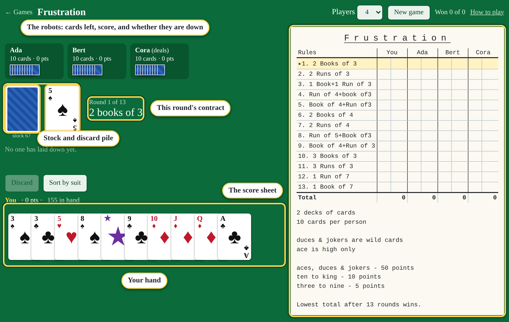
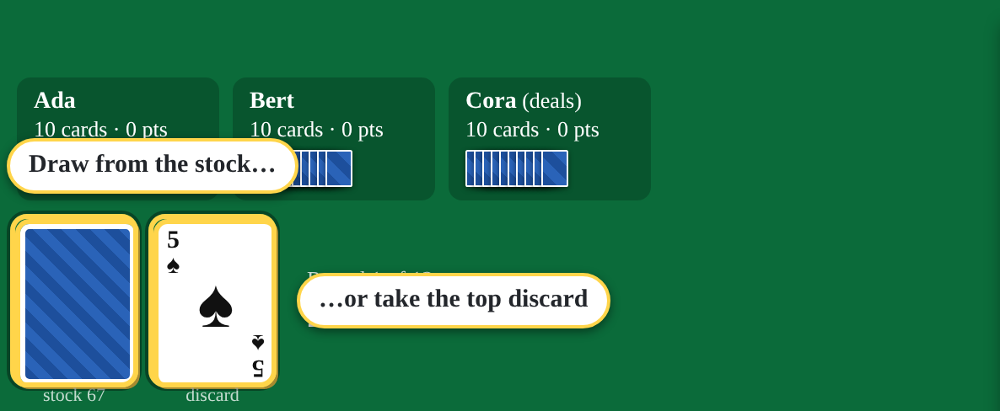
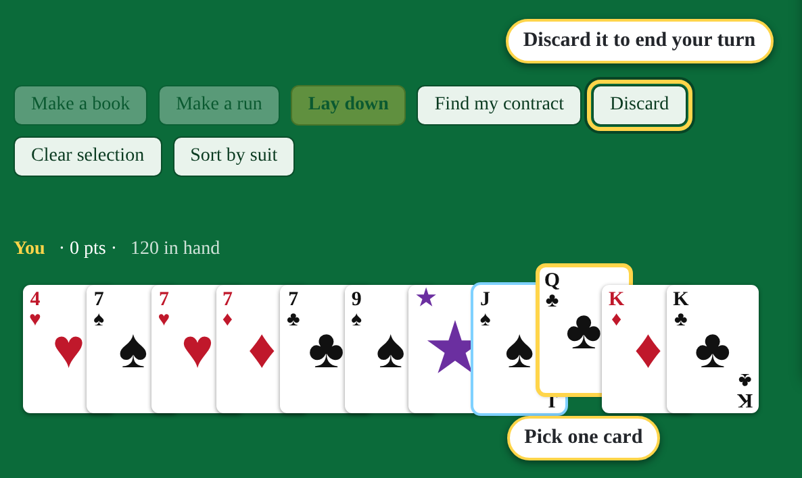
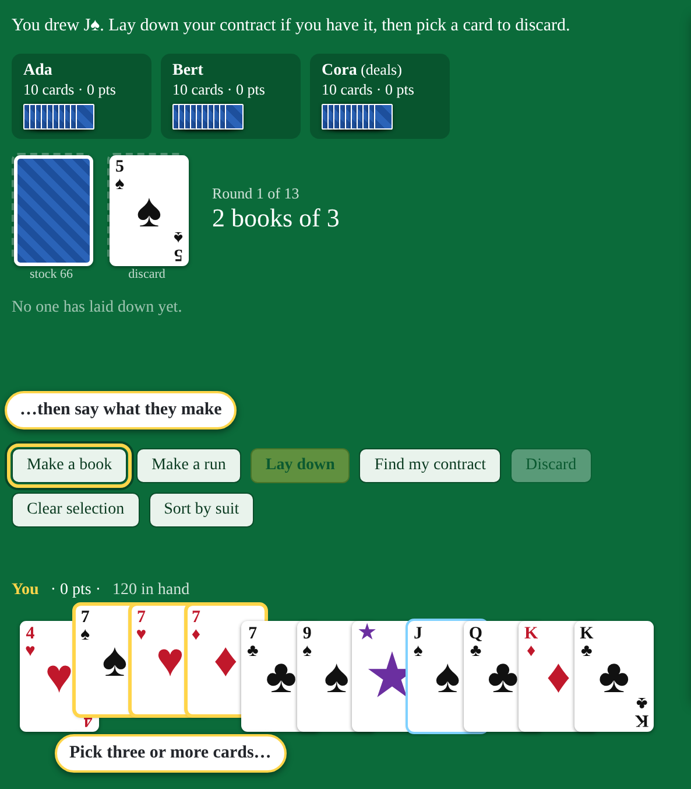
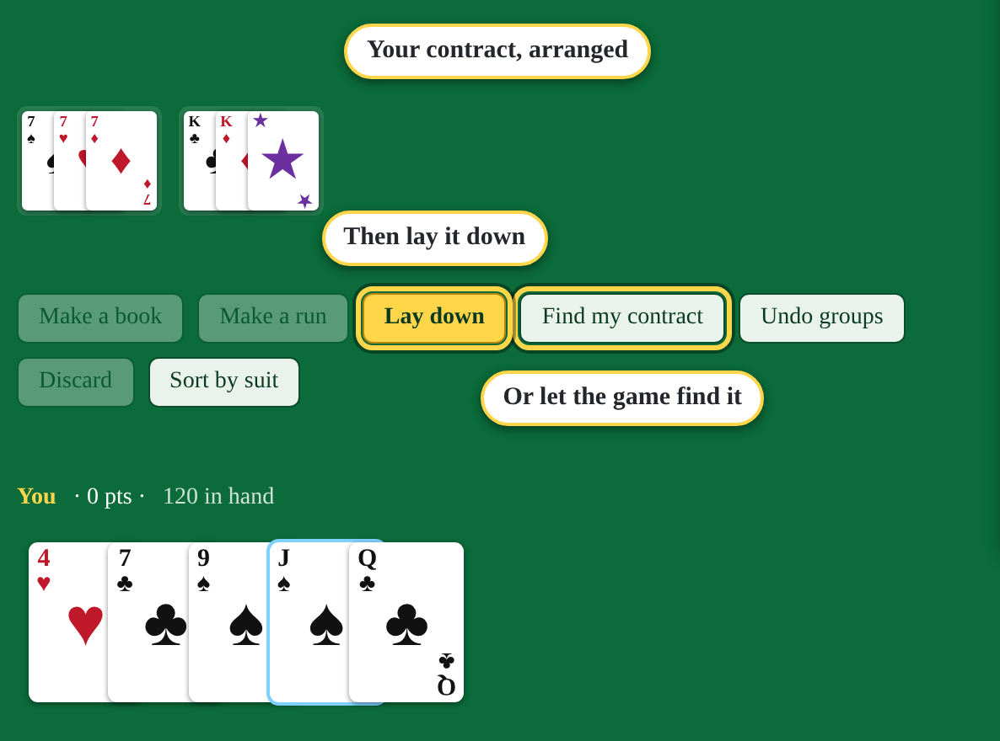
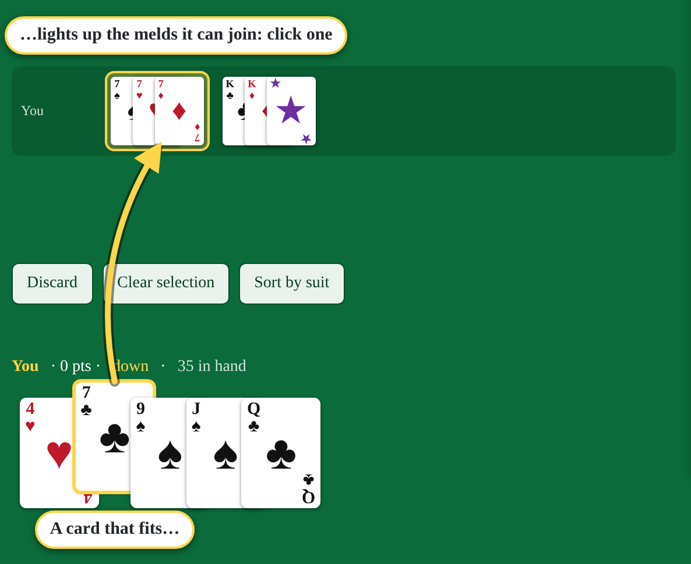
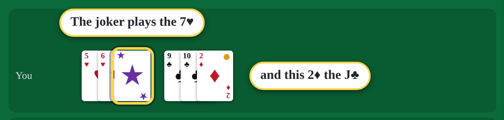
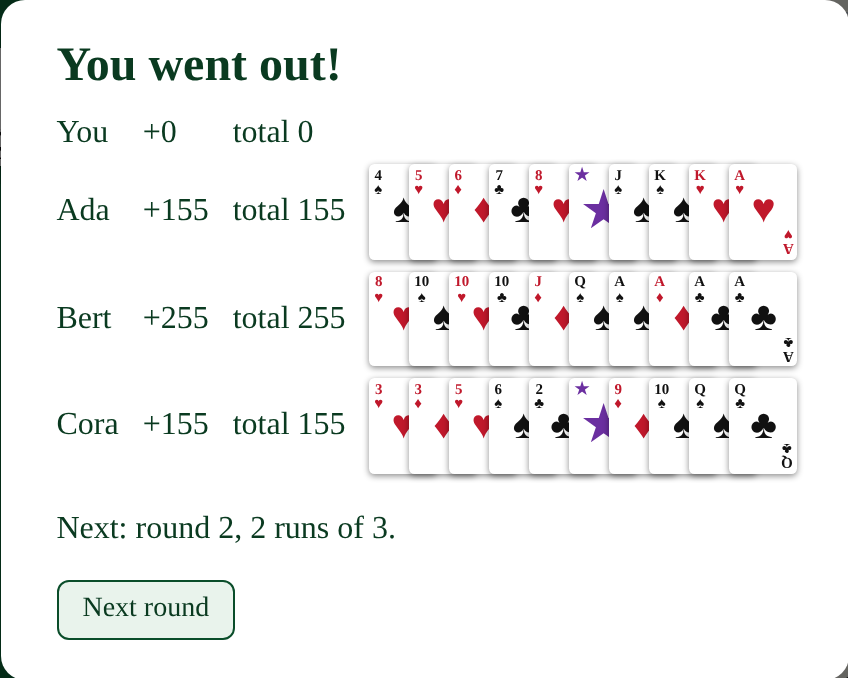
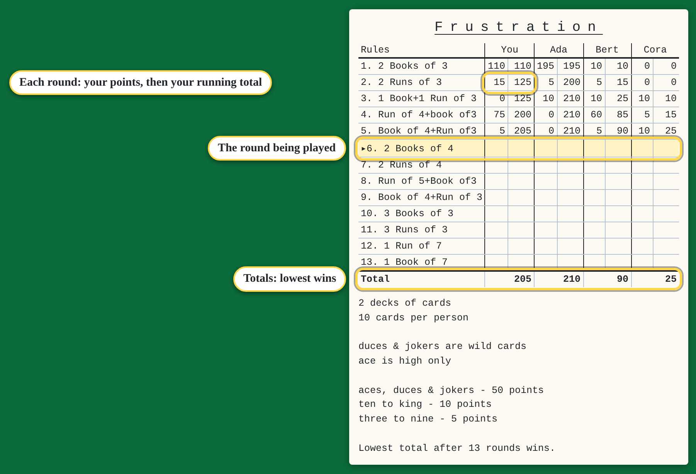

The table
You play against one to five robots (pick the number under Players). It's two decks with their jokers, 10 cards each. The score sheet beside the table works like the paper one.

Books and runs
- A book is three or more cards of the same rank, in any suits: 7♠ 7♥ 7♦.
- A run is three or more cards in a row, all one suit: 5♥ 6♥ 7♥.
- Ace is high only. Q-K-A is a run; A-2-3 is not, and runs don't go round the corner.
Your turn
Every turn is: draw one card, then (if you can) lay down or add to the table, then discard one card.


The robots then take their turns, and the discard pile moves on round the table.
Laying down your contract
When your hand holds this round's contract, put it on the table. Pick the cards for one group, say what they make, then do the next group.

Or press Find my contract and the game arranges it for you, if you have it (it tells you how many cards you're short if you don't). Check it, then press Lay down. Undo groups starts over.

Groups can be longer than the contract asks: a book of 5 counts as a book of 3. You lay down once per round.
Adding to the table
Once your contract is down, you can add cards to any book or run on the table, yours or the robots'. Pick a card and the melds it fits light up; click one.

Wild cards
2s and jokers are wild: they stand in for any card you're missing. Each book or run still needs at least one real card, so you can't lay down three wilds as a book.

Wilds are worth holding on to, but they cost 50 points each if you're caught with them.
Going out
The round ends the moment someone plays their last card, by discarding it or by adding it to the table. Everyone else counts the cards left in their hand.

If the stock runs out, the discards are shuffled into a new stock. If that runs out twice, the round is called and everyone counts what they hold.
Scoring
| Ace, 2, joker | 50 points each |
|---|---|
| 10, J, Q, K | 10 points each |
| 3 to 9 | 5 points each |
| Going out | 0 |
The sheet keeps each round's points and a running total. Lowest total after round 13 wins.

The 13 contracts
Played in this order, as printed on the score sheet:
| 1 | 2 books of 3 |
|---|---|
| 2 | 2 runs of 3 |
| 3 | 1 book of 3 + 1 run of 3 |
| 4 | 1 run of 4 + 1 book of 3 |
| 5 | 1 book of 4 + 1 run of 3 |
| 6 | 2 books of 4 |
| 7 | 2 runs of 4 |
| 8 | 1 run of 5 + 1 book of 3 |
| 9 | 1 book of 4 + 1 run of 3 (printed the same as 5) |
| 10 | 3 books of 3 |
| 11 | 3 runs of 3 |
| 12 | 1 run of 7 |
| 13 | 1 book of 7 |
Rules not on the sheet
The sheet doesn't say, so this version plays the common way:
- Each book or run needs at least one real (not wild) card.
- You add to the table only after your own contract is down.
- Playing your last card onto the table goes out; no final discard needed.
- No buying discards out of turn, and no swapping a real card for a wild on the table.
- The stock is rebuilt from the discards twice; after that the round is called.
Quick reference
| Each turn | Draw (stock or top discard) → lay down / add to the table → discard |
|---|---|
| Book / run | 3+ of a rank / 3+ in a row in one suit; ace high only |
| Wild | 2s and jokers; at least one real card per group |
| Laying down | Once a round, exactly the contract's groups (longer is fine) |
| Round ends | When someone plays their last card |
| Winner | Lowest total after 13 rounds |